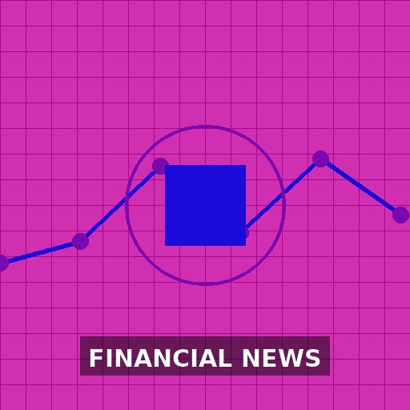

Waneye Financial Overview
Last updated: 2025-10-11 17:21 UTC
Financial Analysis Report
October 11, 2025 at 17:20Executive Summary
Key Highlights
- Trump's 100% China tariff announcement triggers $1.5 trillion market selloff and global trade tensions
- Uranium/nuclear sector shows strong momentum with multiple production increases and investment interest
- Gold reaches record highs amid safe-haven demand and inflation concerns
- AI sector faces bubble concerns despite strong performance from leaders like Nvidia
- Government shutdown continues creating economic headwinds and operational disruptions
- Cryptocurrency market experiences massive liquidations exceeding $6 billion
- Consumer credit growth surges while productivity slows, creating economic divergence
- Multiple nuclear energy stocks highlighted as strong investment opportunities
Market Sentiment
Market Insights
Sector Analysis
Nuclear Energy/Uranium
Strong bullish momentum with production increases and renewed global interest
Kazatomprom's 17% production increase, multiple uranium company recommendations (UEC, NXE, DNN, CEG) suggest sector rotation into nuclear as clean energy alternativeTechnology/AI
Mixed signals with bubble concerns but strong individual performers
Nvidia revenue growth potential to $20B+ contrasts with AI circular deal concerns and potential bubble; OpenAI Sora hits 1M downloads rapidlyFinancials
Divergent performance with Barclays profit rise but leveraged loan strain
Barclays 18% profit rise positive but US leveraged loan market under strain indicates credit quality concernsConsumer Discretionary
Mixed results with some misses and strong holiday sales
Wingstop -12% on profit miss, Amazon record Thanksgiving sales show consumer resilience but selective spendingPrecious Metals
Gold at record highs with strong safe-haven demand
Gold rush in Hong Kong, record prices suggest inflation hedging and geopolitical concerns driving demandKey Market Themes
- Trade War Escalation
- Nuclear Energy Renaissance
- AI Bubble Concerns
- Government Shutdown Impact
- Inflation and Safe-Haven Demand
- Cryptocurrency Volatility
- Consumer Credit Expansion
- Productivity Slowdown
Risk Assessment
Trade War Escalation
Mitigation: Diversify internationally, increase exposure to domestic-focused companies, consider tariff-resistant sectorsAI Sector Bubble
Mitigation: Focus on established AI leaders with real revenue, avoid speculative AI plays, maintain sector diversificationGovernment Shutdown Prolongation
Mitigation: Monitor shutdown-sensitive sectors (travel, government contractors), maintain cash reserves for volatilityCredit Market Stress
Mitigation: Reduce exposure to highly leveraged companies, focus on investment-grade debt, monitor corporate bond spreadsCryptocurrency Volatility
Mitigation: Limit crypto exposure to risk-capital only, consider stablecoin regulation risks, monitor Bitcoin institutional flowsStrategic Recommendations
Investment Opportunities
Increase exposure to uranium/nuclear energy sector
medium-termMultiple production increases, renewed global interest in nuclear power, and uranium self-sufficiency push create strong tailwinds
Selective technology exposure focusing on AI infrastructure leaders
long-termNvidia's strong growth trajectory and AI infrastructure demand despite broader sector concerns
Consider small-cap value stocks as recommended by Ariel's John Rogers
medium-termPotential for outperformance if market rotation occurs, currently undervalued relative to large-cap growth
Defensive Strategies
Reduce exposure to China-dependent companies and tariff-sensitive sectors
immediate100% tariff threat creates significant headwinds for companies with Chinese supply chains or revenue exposure
Increase cash position to 10-15% of portfolio
short-termMarket volatility from trade war and shutdown creates buying opportunities for patient investors
Focus on quality dividend stocks with strong balance sheets
medium-termDefensive characteristics during market uncertainty, provide income stability
Avoid highly leveraged companies and speculative AI plays
immediateCredit market strain and AI bubble concerns create significant downside risk
Market Outlook
Short-term Outlook (1-3 months)
Heightened volatility expected due to trade war escalation and government shutdown. Defensive positioning recommended with focus on sectors less exposed to tariffs. Nuclear energy and precious metals likely to outperform.
Long-term Outlook (6-12 months)
Structural shifts toward energy independence and AI infrastructure create long-term opportunities. Trade tensions may reshape global supply chains, benefiting domestic manufacturing and alternative energy sources.
Key Market Catalysts
- China's response to 100% tariffs
- Government shutdown resolution timeline
- September CPI report release
- Q3 earnings season beginning
- Fed leadership decision (Powell replacement)
- Middle East ceasefire stability
Monitor Closely
- VIX volatility index
- USD/CNY exchange rate
- Uranium spot prices
- Gold prices and ETF flows
- Corporate bond spreads
- China rare earth export policies
- AI company earnings and guidance
- Consumer credit growth trends





US Federal Reserve - Economy at a Glance
Policy Rates
- Federal Reserve: Rate not found
- European Central Bank: Rate not found
- Bank of England: Could not fetch rate (Request Error)
- Bank of Japan: Could not fetch rate (Request Error)
- Swiss National Bank: Could not fetch rate (Request Error)
- Bank of Canada: Rate not found
- Reserve Bank of Australia: 3.60%
- People's Bank of China: Rate not found
- Reserve Bank of New Zealand: Could not fetch rate (Request Error)
| Pair | Bid | Ask | Change |
|---|---|---|---|
| EUR/USD | 1.085 | 1.0852 | -0.0002 |
| USD/JPY | 155.2 | 155.23 | 0.05 |